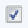

En esta ventana llamada "Pacientes" se muestra un panel Buscar que permite la búsqueda por número o nombre del paciente, un panel Paciente para registrar los datos personales y de contacto del paciente y un panel de botones para interactuar con la ventana.
Al presionar el botón "Nuevo" se oculta el panel de búsqueda y se habilitan los campos para ingresar un nuevo paciente, luego se presiona el botón "Guardar" para registrar los datos ingresados. El botón "Cancelar" borra lo ingresado en los campos de las pestañas (Datos personales y Datos de contacto) y aparece el panel búsqueda.
Al presionar el botón "Informe" aparece la siguiente ventana que nos permite obtener un listado con todos los Pacientes registrados o filtrar el listado.
Los datos requeridos para generar el listado son Ordenar por un campo que se mostrara en el listado, el tipo de ordenamiento del campo elegido y la cantidad de registros ha mostrar.
Para seleccionar un tipo de Filtro se debe presionar en el recuadro y aparecera seleccionado el tipo de filtro .
En el siguiente ejemplo no se aplico ningún filtrado de datos, el mismo se ordeno por Paciente, se utilizo tipo de ordenamiento ascendente y se eligio listar todos los registros. Al presionar el botón "Ver" aparece el siguiente listado.